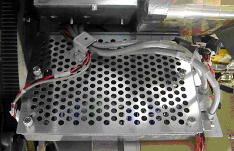
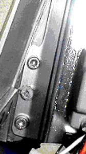
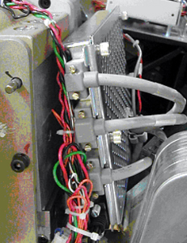

Operating Documentation
Direction 5193575-800, Rev# 5
LightSpeed 7.X Service Information - Adv
Operating Documentation |
| Required Persons | Preliminary Reqs | Procedure | Finalization |
|---|---|---|---|
| 1 | Timing Not Applicable | 20 mins | 10 mins |
| Last Revised: | 23 August 2005 |
| Item | Qty | Effectivity | Part# | Manufacturer | |
|---|---|---|---|---|---|
| FE Toolkit | 1 | - | - | - | |
| ESD wrist-band | 1 | - | - | - | |
| 2.5 mm hex key | 1 | - | - | - | |
| 5 mm hex key | 1 | - | - | - | |
| Item | Qty | Effectivity | Part# | Manufacturer |
|---|---|---|---|---|
| Tie-wraps | AR | - | - | - |
| Hand Towels, for clean-up | AR | - | - | - |
| Item | Qty | Effectivity | Part# | Manufacturer | |
|---|---|---|---|---|---|
| ORP | 1 | - | - | - | |
| Follow ALL required safety and PPE procedures customary for your organization, when working on this product. | |
| Condition | Reference | Eff |
|---|---|---|
Only trained service personnel should service the GE CT Scanner. | - | - |
Move the table to its home position.
Remove gantry covers as required.
Refer to Parts Replacement → Gantry → Enclosure → (Cover Removal Procedure).
| Always turn OFF the HVDC before the 120 VAC. Turning OFF 120 VAC power before HVDC power can result in equipment damage. | |
Turn OFF the three (3) main power switches (HVDC, 120VAC, and Axial Drive) on the Service Switch Panel (SSP).
The gantry can be rotated by hand to gain access to the ORP module, located near the gantry 270 balance weight and the DAS detector asm.
Remove all cables and connections to the ORP module as shown below.

Locate the ORP mounting 6mm hex head screws using a ratchet with a 12” extension, and 5mm hex bit.
Remove the ORP module, and exchange with the replacement module. Reverse the above steps to install the new module. Check that all bolts are torqued to the correct value -- 2.9 N-m (25.66 in-lb) -- and all cables are secure in their clamps.
 
Remove the A1 Lockout/Tagout. Turn ON the gantry service switches, and power up the console.
Install all removed gantry covers. Be sure to reconnect all top cover fan connections. Check that no cables are left in the rotating path. Return dollies to storage areas.
Retest system by scanning.